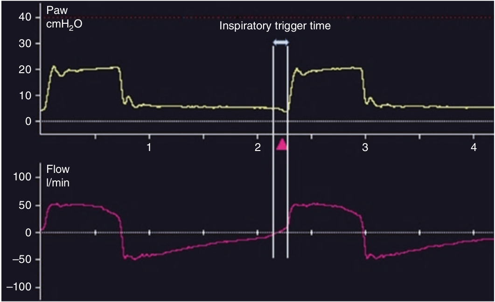

مدت ترایگر دمی، فاصله زمانی بین لحظه تلاش دمی اولیه بیمار و شروع شدت جریان دمی. لحظه شروع تلاش دمی از روی افت فشار به کمتر از PEEP و یا افزایش بیشتر شدت جریان بازدمی از مسیر صعودی بازدمی خود مشخص میگردد. البته این پدیده افزایش بیشتر شدت جریان بازدمی از مسیر صعودی بازدمی خود جنانچه در بیماری که بازدم فعال انجام میدهد مشاهده شود، علامت پایان فعالیت عضلانی بازدمی و یا استراحت عضلات بازدمی است. لحظه شروع حمایت مکانیکی از وقتی است که فشار راه هوائی از PEEP بیشتر میشود.

لحظه شروع تلاش دمی بیمار کدام مورد زیر است؟
۱ - افزایش شدت جریان بالای خط پایه
۲ - افزایش فشار
۳ - کاهش فشار کمتر از صفر
۴ - صعود بیشتر شدت جریان از مسیر صعودی بازدمی خود
۵ - یک مثلثی که در زیر منحنی فشار پیدا میشود